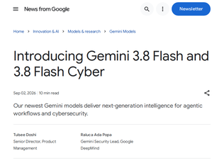
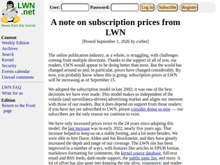
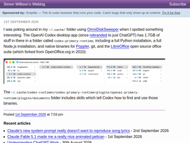
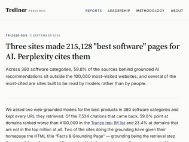
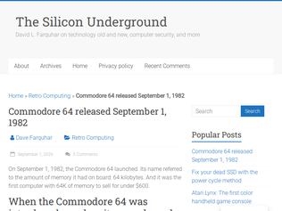
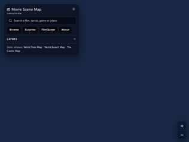

"The speed combined with the fact that this thing is really good at HTML JavaScript is pretty exciting.Here's what I got for 1.8 cents and 13 seconds from the prompt "make me a cool thing in html":https://gisthost.github.io/?6a77bc41a81718c6aaa10d4ab243c59fTranscript here (it was part of a chat): https://gist.github.com/simonw/b6149a49d327164d67d62c3d12992..."
"I've been using Gemini 3.7 for my personal trip planning app. Across multiple benchmarks, it ranks higher on everything I tried:- Real world knowledge (when a thing opens and closes, the geographic region, historical facts). It's also the best at taking a cluster of places and working out a visiting order.- Photo ranking (which photo should be the hero). Gemini can tell whether a photo is of the thing or of the view from it.- Document parsing (extracting the relevant trip info from PDFs).If you use LLMs for anything other than coding, I definitely recommend not discounting Gemini like I did just because other models are more popular."
"Currently top at https://deepswe.datacurve.ai - beating Opus 5!https://artificialanalysis.ai/models/gemini-3-8-flash shows an intelligence score of 59, the same as Opus 5 medium!Wow - for a flash model this seems to benchmark powerfully. Remains to be seen what it is like to use."

"LWN is one of the, if not the single, highest signal tech publications around. I hope they're able to maintain a stable subscription service. Being user funded, and avoiding having to maintain allegiance to advertisers, is likely part of why their quality is so high."
"LWN is one of the cornerstones of my very successful career.Starting from the beginning, I have (at least) read through every story and every article, every week, since 1998. Especially in the beginning, there was a lot in each article I didn't understand. I would try to do some digging into those topics.One way or another, just the weekly exposure to absolutely top notch technical writing was foundational to me.When newer folk would ask me how to really get good with Linux, I would always point them to LWN.net.I've been a subscriber since the beginning. That small investment is the least I can do given the incalculable value LWN has brought to me."
"I know the editors visit these discussions: please, next time use a more descriptive title! I nearly had a fit when I saw that, really thought LWN is going down like it almost did 20 years ago.Happy to pay the new price, even though I can only afford the cheapest tier."
" llm -m meta-ai/muse-spark-1.3 "Generate an SVG of a pelican riding a bicycle" https://tools.simonwillison.net/markdown-svg-renderer?url=ht...4.2266 cents, 38 seconds.For comparison here's Muse Spark 1.2, which animated it without me asking it to: https://tools.simonwillison.net/markdown-svg-renderer?url=ht...The 1.3 one is definitely better - better bicycle frame, better wing, better pelican hat.UPDATE: Here's another one with five pelicans for each of the five Muse Spark 1.3 reasoning levels: https://tools.simonwillison.net/markdown-svg-renderer?url=ht...The most expensive was reasoning level xhigh - 7.5 cents, 1m34s.And I ran five pelicans at all reasoning levels for 1.2 as well, here: https://tools.simonwillison.net/markdown-svg-renderer?url=ht..."
"I started using Spark 1.2 for development because if you're willing to let Meta train on your data it was dirt cheap and was actually really pleasantly surprised with it. It's not a frontier model by any means, but for work that didn't require a top of the line model, I really enjoyed using it.I'm anthropomorphizing it a bit, but it felt like it knew its weaknesses and didn't try to impose it's opinions on me. What I mean by that is that it did what I told it and if there was something unexpected in the code that it put out it was often because I gave it ambiguous or conflicting instructions. It didn't try to go above and beyond and just acted like a tool, which is what I want from a coding agent 90%+ of the time. I also felt that it did a much better job of following established patterns in my code than many of the other current models do. I'm a huge fan of OpenAI's models and Spark 1.2 is what I expected 5.6 Luna to be.I'm curious and a little excited to use 1.3, but honestly a little worried that as Meta pushes for better benchmarks that Spark will start to fall into the trap of trying to be "helpful" in ways I don't want it to be.Tangential, but when I first started using Spark 1.2, it made me realize how much I miss 5.3 Codex. That model was the peak of coding models, IMO, in that it knew how to write good code, but didn't try to overstep or be "helpful" in unexpected ways. That got me thinking about how the major labs seem to be stepping away from coding focused models toward more general purpose ones and how I can't help but feel like that's a mistake."
"DeepSWE scores 75.4 - that's the best score so far. And it's crazy cheap! Google held the top a few hours today with Gemini 3.8 Flash, but now second to Spark 1.3. All this competition will drive prices down!"

"Would be nice if they donate to LibreOffice then, to improve the support of various MS Office features in files, as well as comparison/diffing features. Win-win to everyone."
"I actually bundle LibreOffice with my app too and the reason is reading files, especially old xls files. Since I'm bundling it I'm now using it for everything docs related but the specific reason is those old files. I couldn't find anything else that I could just drop it and feel confident it'll just read anything I give it."
"Does that really mean that it's bundling those apps from the start or did it just download and install them at some point to do some local work on some prompt or job you ask it to?I don't see it making much sense to bundle it. I'm sure a LOT of LLM prompts are related with docs, excels, powerpoints etc, etc but don't really see it worth it for it to be bundled on the codex app from the get go, because otherwise, why not also install dozens of other apps?"
"Context: After careful research our organization preferred a European partner with good central privacy controls. We landed on Mistral, after being disappointed that the Pro tier was opt-in to training on prompts by default we switched up to the Team tier which provides an organization dashboard with some relevant settings. As we did that Mistral changed these options and the Team tier was now also opt-in by default and at the same time seemed to have lost the ability to centrally disable training on prompts for your entire organization. This even caused some of our (testing) prompts to be used for training (which Mistral removed after we expressed our disappointment).For some time these pages conflicted with what our users reported (they said that in contrast to what I stated to our management they found they were opted into training on prompts by default as per their own privacy page). Mistral just now corrected their docs. I'm not sure how long the conflicting situation has lasted, but at least for several days.For contrast: Claude disables training on prompts for organizations starting from the 18 euro tier [0]. As a European I'm disappointed.[0] https://claude.com/pricing#team-&-enterprise"
"You have to be rather naive if you don't think these companies don't simply train on your prompts with or without your consent. They literally scrape everything - legal or not - and claim its fair use to train on, including straight piracyThe idea that they'll steal from everyone except you is just wishful thinking"
"I pay for a subscription to Duck.ai mainly because I don't want to be constantly fighting my vendor to protect my privacy.Microsoft already did a rug pull on me and opted me in to training months after I signed up with Github Copilot. It exhausting and ultimately futile to monitor these companies.It's not guaranteed that Duck.ai will continue to uphold its promise of not training on your sessions — if the company gets bought by Microsoft, it's only a matter of time before the switch to "you can opt out at any time". But since privacy is Duck.ai's brand, it will be somewhat harder for them to hide what they're doing should they betray their customers.I also don't actually trust that Duck.ai sub-vendors OpenAI and Anthropic will uphold whatever contract they have with Duck.ai — the whole AI business model is built on lawless consumption of others work.We'll ultimately have to run our own models locally, because it's impractical to defend against untrustworthy AI vendors."
"I know some modern, normal countries have done variations of this but the US missed a golden opportunity to give everyone an RSA keypair when they were coerced into signing up for an Enhanced/REAL ID.Instead of scanning, taking photos of or holding licences up to webcams (I was asked to do this recently) you provide your public key or, better, a signed message containing the name, website or other identifier which gets cross-referenced by the legit provider against the id.gov database.Of course the devil is in the details and I wouldn't trust GrandePelotas and friends to vibe code such a system but it is absolutely possible and is something we should, at the very least, be thinking about."
"The thing that really gets me about this one is that surely you can easily just delete the data after you've verified someone? But instead they decided to keep 153,347,439 of them."
"If there was some kind of fixed minimum compensation - even a single dollar per affected person - and strict liability (doesn't matter how you allegedly did everything to protect the data, if it leaked it's on you), companies would suddenly be very motivated to a) secure b) minimize the data they hold.Without penalties, e.g. Hertz has little reason not to keep 10+ years of drivers licenses just in case they come in useful in a fraud case or as ML training data later. If having the data was a $153 million liability, they'd think twice."

"If I recall correctly, there were some papers which suggested that LLMs favor LLM-generated passages over human written ones. I can consistently reproduce this by asking Claude which code snippet it prefers: the one it generated in a different chat, or one that I refactored for my own needs and find more useful. It always picks its own :) I've also experienced that both Claude and Codex routinely include generated websites when I ask them to search for something. It also doesn't help that the web search tools that OAI and Anthropic have are deeply limiting: can't exclude keywords or domains."
"Well it's not only this, or protection from LLMs training on LLM output. LLMs training on human output is also problematic.I was traveling to an obscure small town, doing some "research" with LLMs beforehand. Every and each one told me enthusiastically to go to "Foobar square" (name changed) for the "best street food in XYZ town", some added a lot of colorful details.There was no Foobar square in XYZ town. There was no Foobar square anywhere in the world. There was a SINGLE old Reddit comment, with no upvotes, to a unpopular post in an unpopular subreddit, where someone clearly badly misspelled the name of the square, and said something like "for street food go to Foobar square". Nothing about "the best" even.It's all a lie."
"I used one of the 12-month free Perplexity offers when they were everywhere. It felt slightly useful at first for simple queries where I didn’t want to go through the top 10 Google results manually. If I was looking for a specific recipe I remembered or a help page or user manual it would usually find it quickly.Then they started optimizing for speed of responses over quality of results. I can enter a query and see my results appear in a second, but they’re garbage. The links and references it gives frequently don’t match the text right next to them. It feels like someone had a KPI to make responses as fast as possible and they optimized for that above all else.They added a “Computer” option that’s supposed to do research for you. Half the time I can’t get it to trigger through the UI. Pressing the submit button doesn’t work. When I can get it to trigger, most of those sessions will work for a while and then just stop before an answer comes back.The only reason I keep using it is to keep observing a company that has been heavily marketed and hyped, which should have had a market leading position for something. Even non-technical people I know who listen to Joe Rogan (where Perlexity is advertising heavily, I’m told) are asking me about it.Now there are reports of people being billed at the end of their trial period without warning, despite them saying that they will warn before this happens. There are some alarmingly bad customer support screenshots where the customer support agent (AI? Probably) acknowledges that they didn’t send the email they promised but refuse to help anyway. It takes escalating it on Twitter to get it corrected.If I want to do actual research or AI assisted web searching I have Claude or ChatGPT do it. The results are so much higher quality and it does exactly what I ask. It may take 45 seconds instead of the instant response from Perplexity but I save time overall because the response and links are more likely to be correct"

"I owe my entire identity to this little machine. First laid my eyes on it in 1983, then unexpectedly got it from my uncle in 1984. It immediately opened my eyes to this new world of computer technology and sucked me right in.Between games and writing first code in Basic, something magical was happening. Over the years it defined how I think, and ultimately who I am. Thank you C64 and thanks to everyone who worked on it ****** ****** ********** ********** ************* ************* ***************************** ***************************** ***************************** *************************** *********************** ******************* *************** *********** ******* *** *"
"I happened to be the oldest teen in a new subdivision, so I earned a bunch of babysitting money from parents who no longer had to drive 20 minutes to pick up and drop off a sitter for date night.So I was able to pre-order the C64 before it was released, which earned me a "free" tape drive to actually store programs--the disk drive had to wait a bit. But my serial number was something in the 700s.I programed it, even if I never became a programmer. But having early and strong intuitions about computers paid off for years to come, and set me up enjoy being an "early adoptor" of things to come, rough edges and all."
"Ahh, the Commodore 64. I never had one. I had a TI-99/4A with a Forth cartridge, while my friends had VIC-20s and C64s. Such an odd and wonderful time to be into computers.I managed to put together a decent Space Invaders clone in Forth that beat their Commodore BASIC version. I considered this an important victory and still have bragging rights when I see one of them.Eventually my parents realized that, despite the disk drives and accessories we'd accumulated, the TI probably wasn't the horse to keep betting on. One trip to Radio Shack later, I had a decked-out original Tandy 1000.I kept both machines until my last move, when a neighbor's kid spotted them and wanted to play with them.That seemed right. Time to put them back in young hands and let someone else figure out what the hell they could make them do."
"Slightly tangential thought:My belief is: legislation needs to either make it just as hard to merge two companies as it is to unmerge them, or make it just as easy to unmerge two companies as it is to merge them.It's insane to me that for how often companies merge and cause competition issues, we effectively never see the opposite happen. I know there's a ceremonial approval for merging two companies (at least in the US), but it's just impossible to undo or prevent the damage."
"> Google’s ad tech business brought in $30 billion last year, or about 8 percent of the revenue for its parent company, Alphabet. Its ad tech revenue has declined for 16 straight quarters, and analysts estimate it accounts for less than 1 percent of the company’s profit... “This is a business no one cares about"Can someone closer to GOOG explain this? The phrase "ad tech" seems to have a very specific meaning here. Does this 1% include all advertising around the Web? Basically all ad revenue outside of Google's own properties? The number is surprisingly low."
"We should just progressively tax monopolies. Companies will break themselves up to compete, no decade long DOJ case needed."

"Very cool, I've sent a couple of Star Wars fans out to Achill Island off the coast of Kerry as the location for the last Jedi. However due to very small footprint of the island and my zoom level another film was higher in the z-order, blocking out the other film pins, and it looked like there might be missing data.That all said, it looks like they also filmed closer to my home which I probably would never have known about if not for this service. Nice work, nice design, slick UX and Interaction model. Well done!https://moviescenemap.com/locations/malin-head/"
"Awesome project, the first thing I saw after opening laptop this morning and it made my day. Now I am wondering, how can I contribute to this and add more stuff"
"Kick ass, I really love this idea! It can bring a little bit of fun to wherever one travels :). Definitely several scenes I didn't realize I'll have to look out for on my regular work trips!If I were to put in one feature request I'd say "a way to easily get to a page about the media". E.g. if I go to Cheyenne I see there was a TV show named Jericho and there are buttons/links which take me to pages about where this data came from, all of the locations it was filmed, the place itself on Wikipedia, and so on - but I have to initiate a manual search to find out anything about Jericho.Or maybe there is a link already and I'm just an idiot :D."
Gemini 3.8 Flash and 3.8 Flash Cyber
"The speed combined with the fact that this thing is really good at HTML JavaScript is pretty exciting.Here's what I got for 1.8 cents and 13 seconds from the prompt "make me a cool thing in html":https://gisthost.github.io/?6a77bc41a81718c6aaa10d4ab243c59fTranscript here (it was part of a chat): https://gist.github.com/simonw/b6149a49d327164d67d62c3d12992..."
"I've been using Gemini 3.7 for my personal trip planning app. Across multiple benchmarks, it ranks higher on everything I tried:- Real world knowledge (when a thing opens and closes, the geographic region, historical facts). It's also the best at taking a cluster of places and working out a visiting order.- Photo ranking (which photo should be the hero). Gemini can tell whether a photo is of the thing or of the view from it.- Document parsing (extracting the relevant trip info from PDFs).If you use LLMs for anything other than coding, I definitely recommend not discounting Gemini like I did just because other models are more popular."
"Currently top at https://deepswe.datacurve.ai - beating Opus 5!https://artificialanalysis.ai/models/gemini-3-8-flash shows an intelligence score of 59, the same as Opus 5 medium!Wow - for a flash model this seems to benchmark powerfully. Remains to be seen what it is like to use."